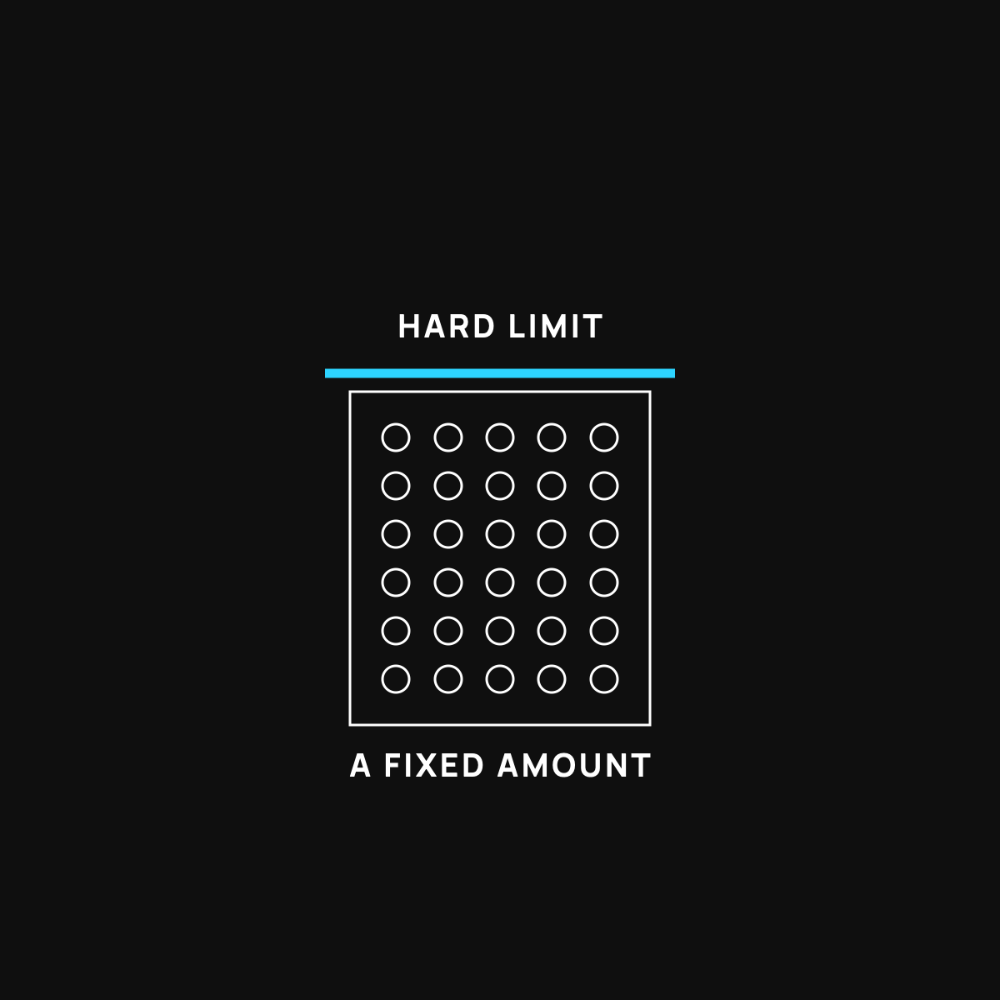

What "Scarce" Means for Your Money
Value sticks to things you can't make more of. That's the whole idea.
Money holds its value when it's hard to make more of, and loses it when more can always be made. Front-row concert seats hold their worth because nobody can print more. Dollars slowly buy less for the opposite reason. Bitcoin has a hard cap written into its rules, but scarce doesn't automatically mean safe or valuable.

Money holds its value when it's hard to make more of. That one idea explains a lot about why some things stay valuable and others slowly turn into dust. The fancy word is "scarce." Here's what it really means, in plain terms.
Front-row seats
Think about the front row at a concert by your favorite band. There are only so many of those seats. You cannot print more of them. So they hold their worth, and people will pay a lot to get one.
Now imagine the band could magically print unlimited front-row seats, as many as they wanted, any time. What happens to the value of your seat? It craters. If everyone can have a front-row seat, a front-row seat is worth almost nothing.
That's scarcity in one picture. Hard to make more equals holds its value. Easy to make more equals loses it.
Why this matters for the money in your pocket
Here's the uncomfortable part. Regular dollars are closer to the "unlimited seats" example than most people realize. More can always be made. And when there's more of something, each one you're holding tends to be worth a little less over time. That's a big reason a dollar buys less today than it did when you were a kid.
It's nothing you did. It's just what happens to anything that can be made in unlimited amounts. The value leaks out slowly.
Where the idea of a hard limit comes in
Some things have a built-in cap. There's a fixed amount, and no one, anywhere, can make more. That's the whole idea behind bitcoin that gets people interested. There's a hard limit on how many can ever exist, written into the rules, and nobody can change it to print more.
Whether or not bitcoin ends up mattering to you, the concept is worth understanding, because it's the same reason front-row seats and rare things hold value. When something truly can't be watered down, scarcity does the heavy lifting.
The honest catch
Now the fair warning, because this brand doesn't sell you the shiny half and hide the rest.
Scarce does not automatically mean safe, or valuable, or a good buy. Plenty of scarce things are worthless because nobody wants them. And scarce things can still swing wildly in price in the short run. Scarcity is one ingredient in holding value, not a guarantee of it. So it's a lens for understanding money, not a green light to bet money you can't afford to lose. (I dug into that line between saving and gambling here.)
The takeaway
Value sticks to things that are hard to make more of, and leaks out of things that aren't. Front-row seats hold their worth because you can't print more. Dollars slowly lose theirs because more can always be made. Once you see money through that one simple lens, a lot of confusing headlines suddenly make sense.
Questions I get about this
Why does the dollar lose value over time?
Because more dollars can always be made, and when there's more of something, each one is worth a little less. It's nothing you did. It's what happens to anything that can be produced in unlimited amounts. I explain the slow leak with a flat tire in The Dollar's Slow Leak.
Does scarcity make bitcoin valuable?
Scarcity is one ingredient, not a guarantee. Bitcoin has a fixed limit on how many can ever exist, which is the same reason front-row seats and gold hold value. But people also have to want it and trust it, and the price still swings wildly in the short run.
Is scarce money always a good buy?
No. Plenty of scarce things are worthless because nobody wants them. Scarcity is a lens for understanding money, not a green light to bet money you can't afford to lose. Keep the saving-versus-gambling line honest.
New here?
Normaltown USA is plain-English money and healthcare help for normal people, written by a regular guy with a family of four. No jargon, no hype. Start here, or read the FAQ.